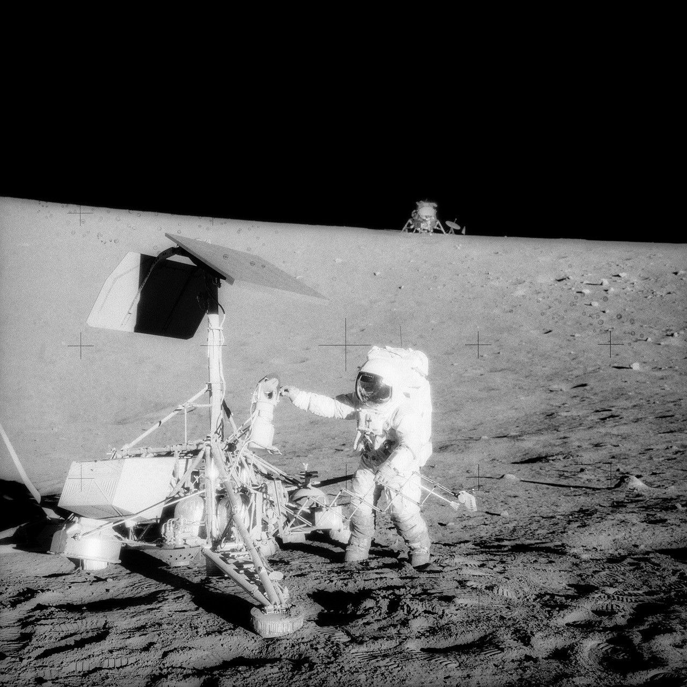
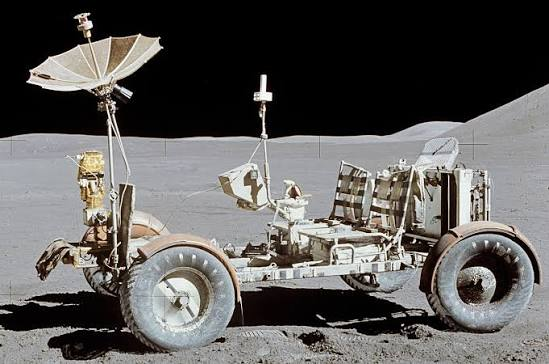
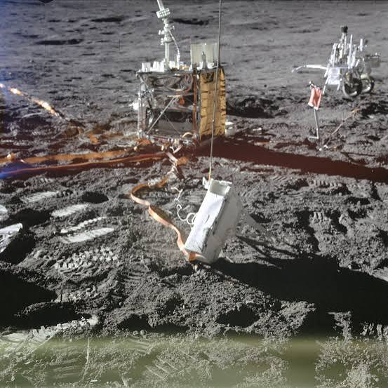
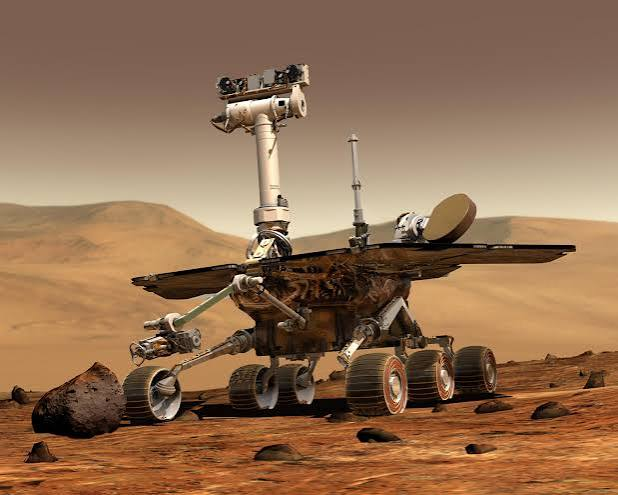
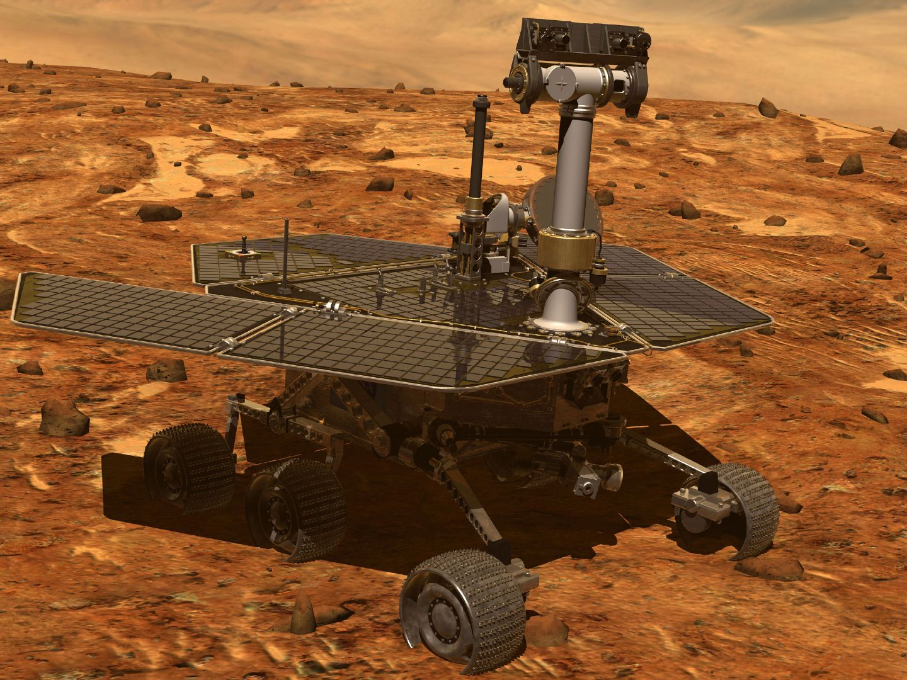

LUNAR & MARTIAN ARTIFACTS
SURFACE EQUIPMENT MUSEUM
Discover iconic landers, rovers, and scientific packages left behind on the Moon and Mars by historic space missions.

MOON LANDER
Surveyor 3
Uncrewed lunar lander visited years later by Apollo 12 astronauts.
VIEW DETAILS →
MOON VEHICLE
Apollo Lunar Rover
The iconic electric vehicle driven across the lunar surface during Apollo missions.
VIEW DETAILS →
SCIENTIFIC STATION
ALSEP Package
A set of nuclear-powered scientific instruments left on the Moon to monitor seismic activity.
VIEW DETAILS →
MARS ROVER
Spirit Rover
Explored Martian craters and soil before getting permanently stuck in sand.
VIEW DETAILS →
MARS ROVER
Opportunity Rover
The legendary robotic rover that survived for nearly 15 years on the Red Planet.
VIEW DETAILS →